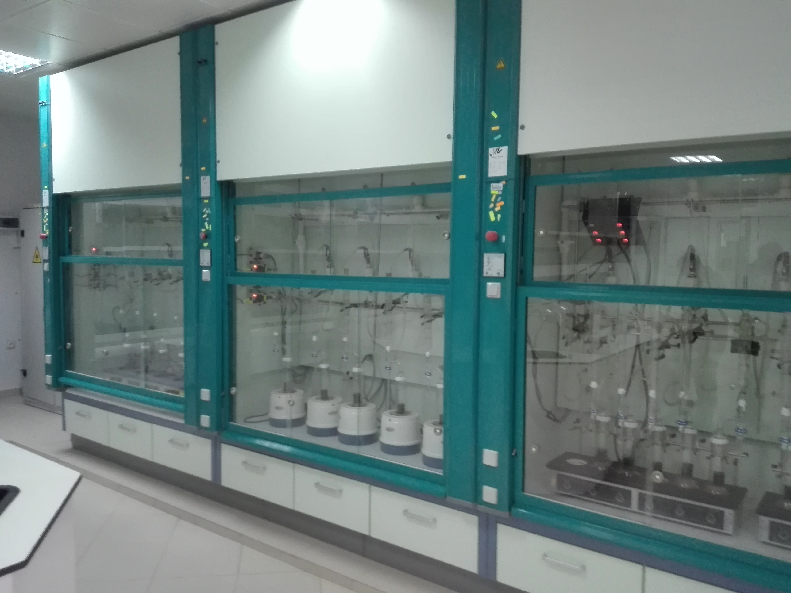

PRESTATION
Réalisation des études, synthèses, prestations d'analyseet d'expérimentation se rapportant notamment aux besoins d'exploitation, deproduction, de transport et de valorisation des hydrocarbures
Introduction et développement de nouvelles techniques,méthodes d'analyse et d'interprétation
Soutien et assistance aux structures opérationnelles deSONATRACH et ses filiales, par la prise en charge de la résolution desproblèmes rencontrés, à caractères scientifique et technique
Participation à l'optimisation des schémas dedéveloppement des gisements d'hydrocarbures et à l'amélioration de leurrécupération

